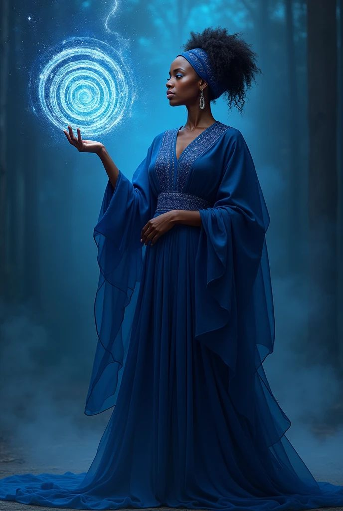
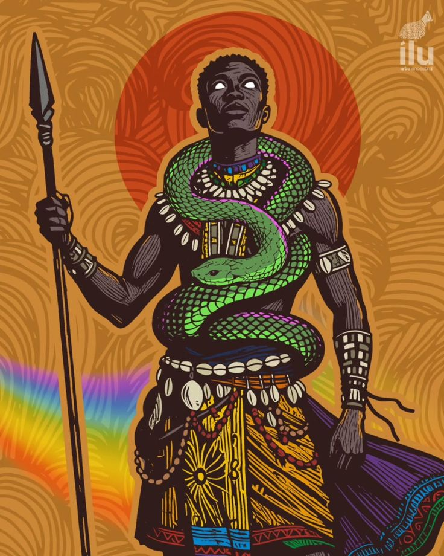
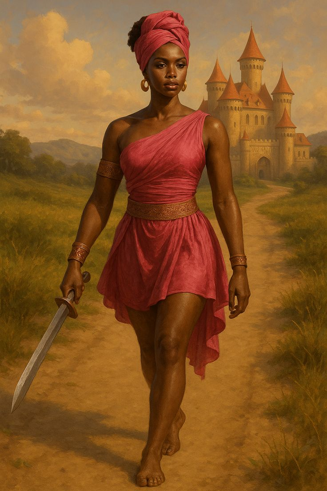
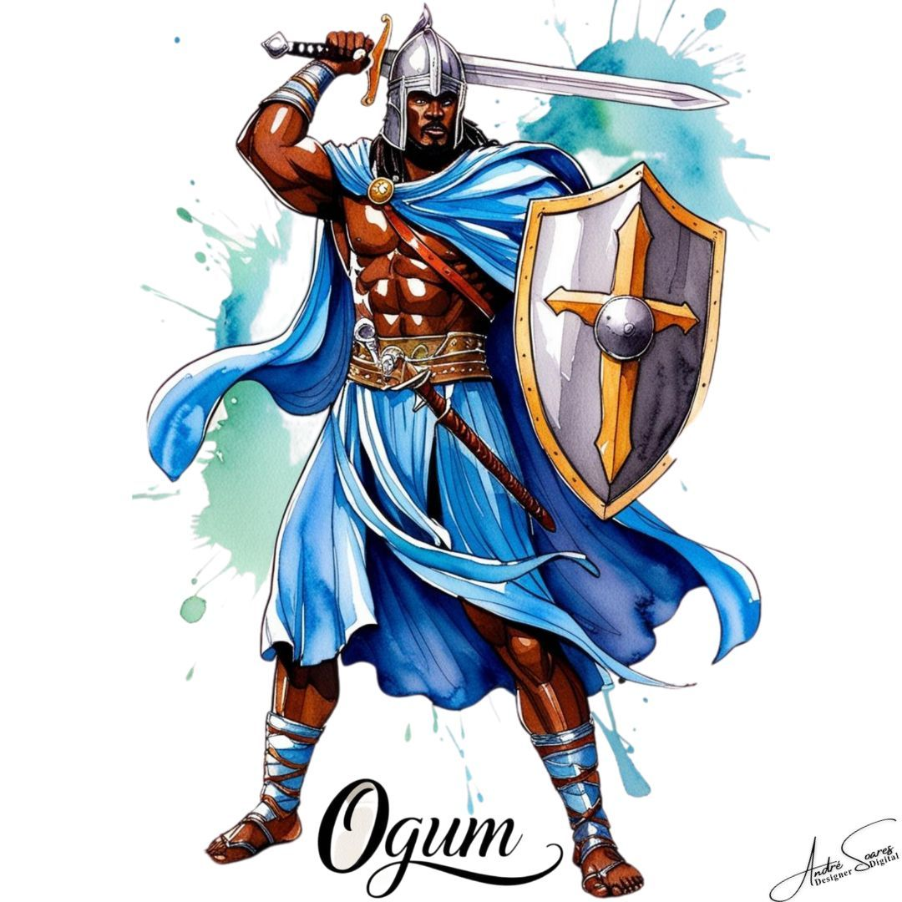
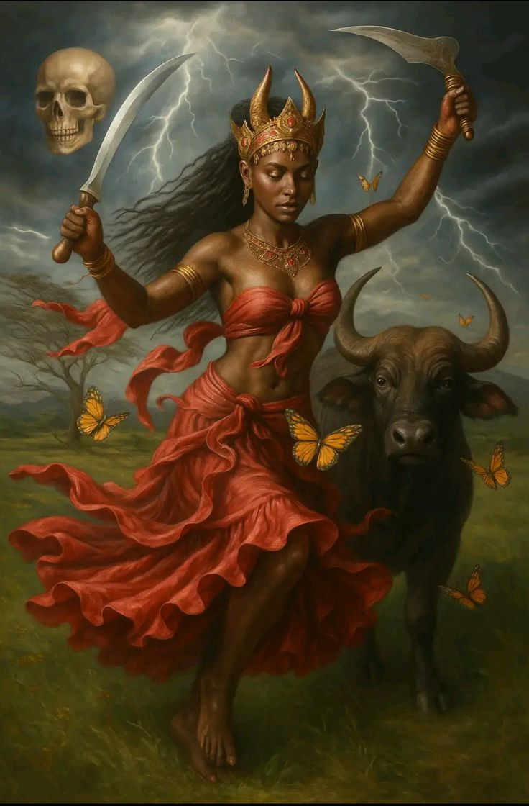
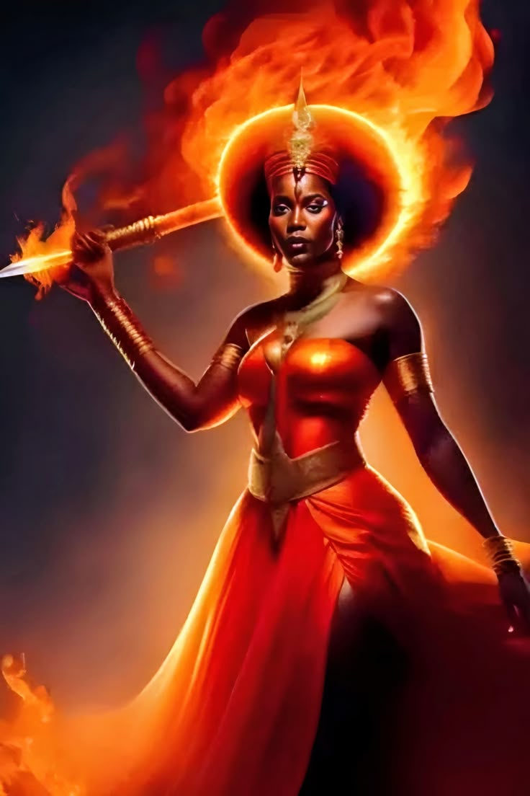
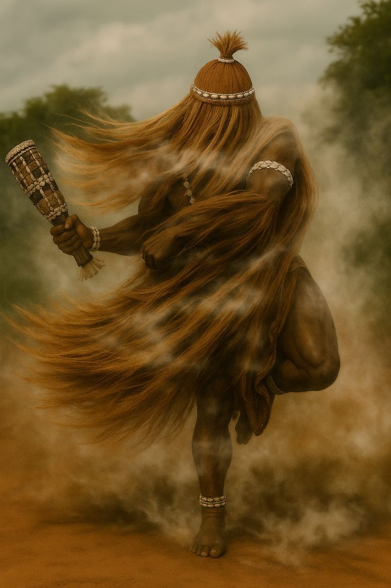
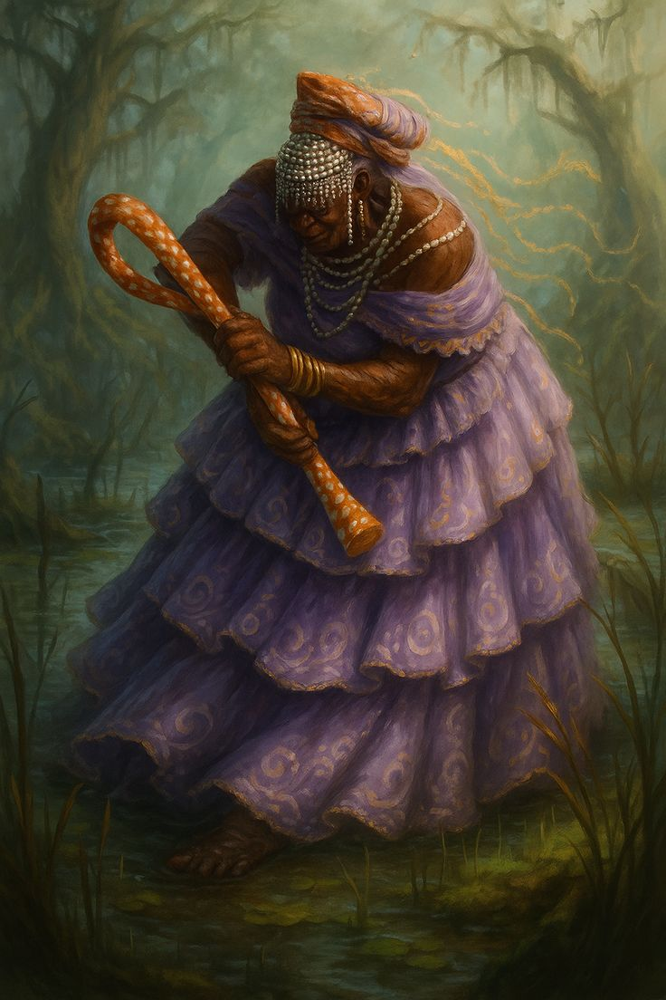
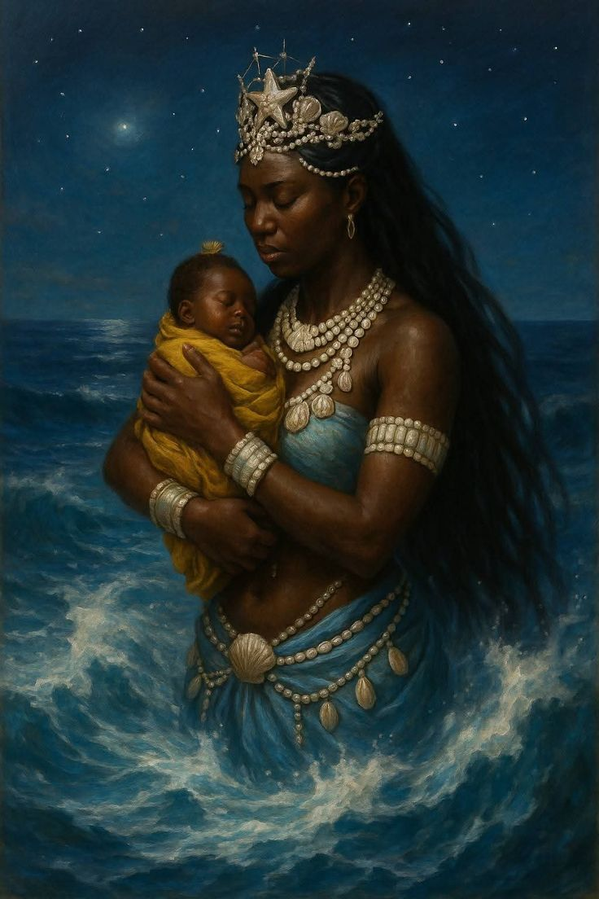
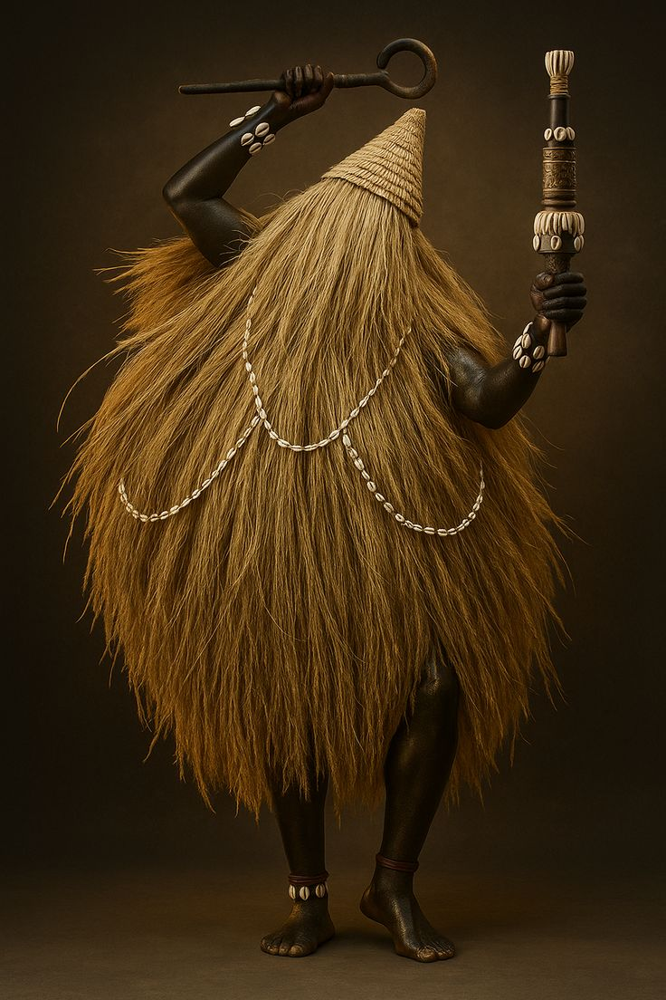

VEJA UM POUCO SOBRE OS ORIXÁS
Oxalá
Oxalá é o orixá ligado à criação da vida e da humanidade. Ele representa a paz, a fé, a calma e a sabedoria. É associado à cor branca, que simboliza pureza e equilíbrio. Oxalá é visto como aquele que busca a harmonia entre as pessoas e orienta os caminhos com paciência e justiça.
Veja mais sobre OxaláLogunan

Logunã é a orixá ligada ao tempo cronológico, ao tempo que organiza a vida, os ciclos e os acontecimentos. Ela é conhecida como a mãe do tempo, responsável pelo ritmo natural das coisas, pelo amadurecimento e pela passagem ordenada do passado, presente e futuro.
Veja mais sobre LogunanOxum
Oxum é a orixá das águas doces, como rios e cachoeiras. Ela representa o amor, a sensibilidade, a beleza e o cuidado emocional. Oxum está ligada aos sentimentos, à fertilidade e à valorização do afeto, mostrando a importância do equilíbrio emocional.
Veja mais sobre OxumOxumare

Oxumarê é o orixá ligado ao tempo cíclico, à renovação e à continuidade da vida. Ele representa o movimento constante da natureza, simbolizando aquilo que nasce, se transforma e retorna. Por isso, Oxumarê é associado ao arco-íris e à serpente, imagens que expressam ligação entre o céu e a terra.
Veja mais sobre OxumarêOxóssi
Oxóssi é o orixá da caça, das florestas e do conhecimento. Ele representa a sabedoria, a inteligência e a busca pelo aprendizado. Oxóssi está ligado à sobrevivência, ao equilíbrio com a natureza e à capacidade de encontrar soluções com calma e estratégia.
Veja mais sobre OxóssiObá

Obá é a orixá ligada à força, à coragem e à estratégia. Guerreira e determinada, ela representa a luta, a resistência e a capacidade de enfrentar dificuldades com firmeza. Obá simboliza a força feminina voltada para a ação e para a defesa.
Veja mais sobre ObáOgum

Ogum é o orixá do ferro, da guerra e do trabalho. Ele simboliza a luta diária, a persistência e a capacidade de enfrentar dificuldades. Ogum é conhecido como aquele que abre caminhos, ajudando as pessoas a seguirem em frente mesmo diante dos obstáculos.
Veja mais sobre OgumIansã

Iansã é a orixá dos ventos, das tempestades e das transformações. Ela simboliza coragem, movimento e mudança. Iansã representa a força feminina e a capacidade de enfrentar desafios, mostrando que as transformações fazem parte da vida.
Veja mais sobre IansãXangô
Xangô é o orixá da justiça, do fogo e dos trovões. Ele representa a força, a autoridade e o senso de justiça. Xangô está ligado à ideia de fazer o que é certo, punir injustiças e equilibrar as decisões. É um orixá associado à coragem e à responsabilidade.
Veja mais sobre XangôEgunitá

Egunita é uma linha de trabalho espiritual da Umbanda, ligada ao fogo, à justiça divina e à purificação. Sua atuação está relacionada à queima de energias negativas, à correção de excessos e ao restabelecimento do equilíbrio espiritual.
Veja mais sobre EgunitáObaluaê

Obaluaiê é o orixá ligado à saúde, às doenças e à cura. Ele representa o sofrimento humano, mas também a superação e a transformação. Obaluaiê simboliza a passagem da dor para a cura, ensinando sobre respeito, humildade e resistência.
Veja mais sobre ObaluaêNanã

Nanã é uma das orixás mais antigas, ligada à terra, à lama e à ancestralidade. Ela representa a sabedoria dos mais velhos, o tempo e o ciclo da vida. Nanã está associada ao nascimento e à morte, simbolizando o retorno à origem.
Veja mais sobre NanãIemanjá

Iemanjá é a orixá dos mares e das águas salgadas. Ela representa a maternidade, a proteção e o cuidado com a família. Muito conhecida no Brasil, Iemanjá é vista como uma grande mãe, que acolhe, protege e escuta seus filhos, sendo símbolo de amor e acolhimento.
Veja mais sobre IemanjáOmolu

Omolu é o orixá ligado às doenças, à cura e à transformação. Ele representa o sofrimento humano, mas também a superação e a possibilidade de renovação após a dor. Omulu ensina que a cura não é apenas física, mas também espiritual e emocional
Veja mais sobre Omolu